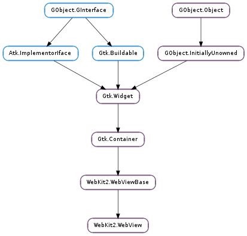

| Name | Type | Flags | Description |
|---|---|---|---|
| estimated-load-progress | float | r | An estimate of the percent completion for a document load |
| favicon | int | r | The favicon associated to the view, if any |
| group | WebKit2.WebViewGroup | r/w/c | The WebKit2.WebViewGroup of the view |
| is-loading | bool | r | Whether the view is loading a page |
| title | str | r | Main frame document title |
| uri | str | r | The current active URI of the view |
| view-mode | WebKit2.ViewMode | r/w | The view mode to display the web view contents |
| web-context | WebKit2.WebContext | r/w/c | The web context for the view |
| zoom-level | float | r/w | The zoom level of the view content |
| Name | Parameters | Return | Description |
|---|---|---|---|
| authenticate | WebKit2.AuthenticationRequest | bool | This signal is emitted when the user is challenged with HTTP authentication. To let the application access or supply the credentials as well as to allow the client application to either cancel the request or perform the authentication, the signal will pass an instance of the WebKit2.AuthenticationRequest in the request argument. To handle this signal asynchronously you should keep a ref of the request and return True. To disable HTTP authentication entirely, connect to this signal and simply return True. The default signal handler will run a default authentication dialog asynchronously for the user to interact with. |
| close | Emitted when closing a WebKit2.WebView is requested. This occurs when a call is made from JavaScript’s window.close function. It is the owner’s responsibility to handle this signal to hide or destroy the WebKit2.WebView, if necessary. | ||
| WebKit2.ContextMenu, Gdk.Event, WebKit2.HitTestResult | bool | Emmited when a context menu is about to be displayed to give the application a chance to customize the proposed menu, prevent the menu from being displayed or build its own context menu. * To customize the proposed menu you can use WebKit2.ContextMenu.prepend (), WebKit2.ContextMenu.append () or WebKit2.ContextMenu.insert () to add new WebKit2.ContextMenuItems to context_menu, WebKit2.ContextMenu.move_item () to reorder existing items, or WebKit2.ContextMenu.remove () to remove an existing item. The signal handler should return False, and the menu represented by context_menu will be shown. * To prevent the menu from being displayed you can just connect to this signal and return True so that the proposed menu will not be shown. * To build your own menu, you can remove all items from the proposed menu with WebKit2.ContextMenu.remove_all (), add your own items and return False so that the menu will be shown. You can also ignore the proposed WebKit2.ContextMenu, build your own Gtk.Menu and return True to prevent the proposed menu from being shown. * If you just want the default menu to be shown always, simply don’t connect to this signal because showing the proposed context menu is the default behaviour. If the signal handler returns False the context menu represented by context_menu will be shown, if it return True the context menu will not be shown. The proposed WebKit2.ContextMenu passed in context_menu argument is only valid during the signal emission. | |
| Emitted after WebKit2.WebView ::context-menu signal, if the context menu is shown, to notify that the context menu is dismissed. | |||
| create | Gtk.Widget | Emitted when the creation of a new WebKit2.WebView is requested. If this signal is handled the signal handler should return the newly created WebKit2.WebView. The new WebKit2.WebView should not be displayed to the user until the WebKit2.WebView ::ready-to-show signal is emitted. | |
| decide-policy | WebKit2.PolicyDecision, WebKit2.PolicyDecisionType | bool | This signal is emitted when WebKit is requesting the client to decide a policy decision, such as whether to navigate to a page, open a new window or whether or not to download a resource. The WebKit2.NavigationPolicyDecision passed in the decision argument is a generic type, but should be casted to a more specific type when making the decision. For example: .. code-block:: c static gboolean decide_policy_cb (WebKitWebView web_view, WebKitPolicyDecision *decision, WebKitPolicyDecisionType type) { switch (type) { case WEBKIT_POLICY_DECISION_TYPE_NAVIGATION_ACTION: WebKitNavigationPolicyDecision *navigation_decision = WEBKIT_NAVIGATION_POLICY_DECISION (decision); / Make a policy decision here. / break; case WEBKIT_POLICY_DECISION_TYPE_NEW_WINDOW_ACTION: WebKitNavigationPolicyDecision *navigation_decision = WEBKIT_NAVIGATION_POLICY_DECISION (decision); / Make a policy decision here. / break; case WEBKIT_POLICY_DECISION_TYPE_RESPONSE: WebKitResponsePolicyDecision *response = WEBKIT_RESPONSE_POLICY_DECISION (decision); / Make a policy decision here. / break; default: / Making no decision results in webkit_policy_decision_use(). */ return FALSE; } return TRUE; } It is possible to make policy decision asynchronously, by simply calling GObject.Object.ref () on the decision argument and returning True to block the default signal handler. If the last reference is removed on a WebKit2.PolicyDecision and no decision has been made explicitly, WebKit2.PolicyDecision.use () will be the default policy decision. The default signal handler will simply call WebKit2.PolicyDecision.use (). Only the first policy decision chosen for a given WebKit2.PolicyDecision will have any affect. |
| enter-fullscreen | bool | Emitted when JavaScript code calls element.webkitRequestFullScreen. If the signal is not handled the WebKit2.WebView will proceed to full screen its top level window. This signal can be used by client code to request permission to the user prior doing the full screen transition and eventually prepare the top-level window (e.g. hide some widgets that would otherwise be part of the full screen window). | |
| insecure-content-detected | WebKit2.InsecureContentEvent | This signal is emitted when insecure content has been detected in a page loaded through a secure connection. This typically means that a external resource from an unstrusted source has been run or displayed, resulting in a mix of HTTPS and non-HTTPS content. You can check the event parameter to know exactly which kind of event has been detected (see WebKit2.InsecureContentEvent ). | |
| leave-fullscreen | bool | Emitted when the WebKit2.WebView is about to restore its top level window out of its full screen state. This signal can be used by client code to restore widgets hidden during the WebKit2.WebView ::enter-fullscreen stage for instance. | |
| load-changed | WebKit2.LoadEvent | Emitted when the a load operation in web_view changes. The signal is always emitted with WebKit2.LoadEvent.STARTED when a new load request is made and WebKit2.LoadEvent.FINISHED when the load finishes successfully or due to an error. When the ongoing load operation fails WebKit2.WebView ::load-failed signal is emitted before WebKit2.WebView ::load-changed is emitted with WebKit2.LoadEvent.FINISHED. If a redirection is received from the server, this signal is emitted with WebKit2.LoadEvent.REDIRECTED after the initial emission with WebKit2.LoadEvent.STARTED and before WebKit2.LoadEvent.COMMITTED. When the page content starts arriving the signal is emitted with WebKit2.LoadEvent.COMMITTED event. You can handle this signal and use a switch to track any ongoing load operation. .. code-block:: c static void web_view_load_changed (WebKitWebView web_view, WebKitLoadEvent load_event, gpointer user_data) { switch (load_event) { case WEBKIT_LOAD_STARTED: / New load, we have now a provisional URI / provisional_uri = webkit_web_view_get_uri (web_view); / Here we could start a spinner or update the* location bar with the provisional URI / break; case WEBKIT_LOAD_REDIRECTED: redirected_uri = webkit_web_view_get_uri (web_view); break; case WEBKIT_LOAD_COMMITTED: / The load is being performed. Current URI is* the final one and it won’t change unless a new* load is requested or a navigation within the* same page is performed / uri = webkit_web_view_get_uri (web_view); break; case WEBKIT_LOAD_FINISHED: / Load finished, we can now stop the spinner */ break; } } | |
| load-failed | WebKit2.LoadEvent, str, int | bool | Emitted when an error occurs during a load operation. If the error happened when starting to load data for a page load_event will be WebKit2.LoadEvent.STARTED. If it happened while loading a committed data source load_event will be WebKit2.LoadEvent.COMMITTED. Since a load error causes the load operation to finish, the signal WebKit2.WebView ::load-changed will always be emitted with WebKit2.LoadEvent.FINISHED event right after this one. By default, if the signal is not handled, a stock error page will be displayed. You need to handle the signal if you want to provide your own error page. |
| mouse-target-changed | WebKit2.HitTestResult, int | This signal is emitted when the mouse cursor moves over an element such as a link, image or a media element. To determine what type of element the mouse cursor is over, a Hit Test is performed on the current mouse coordinates and the result is passed in the hit_test_result argument. The modifiers argument is a bitmask of Gdk.ModifierType flags indicating the state of modifier keys. The signal is emitted again when the mouse is moved out of the current element with a new hit_test_result. | |
| permission-request | WebKit2.PermissionRequest | bool | This signal is emitted when WebKit is requesting the client to decide about a permission request, such as allowing the browser to switch to fullscreen mode, sharing its location or similar operations. A possible way to use this signal could be through a dialog allowing the user decide what to do with the request: .. code-block:: c static gboolean permission_request_cb (WebKitWebView *web_view, WebKitPermissionRequest *request, GtkWindow *parent_window) { GtkWidget *dialog = gtk_message_dialog_new (parent_window, GTK_DIALOG_MODAL, GTK_MESSAGE_QUESTION, GTK_BUTTONS_YES_NO, “Allow Permission Request?”); gtk_widget_show (dialog); gint result = gtk_dialog_run (GTK_DIALOG (dialog)); switch (result) { case GTK_RESPONSE_YES: webkit_permission_request_allow (request); break; default: webkit_permission_request_deny (request); break; } gtk_widget_destroy (dialog); return TRUE; } It is possible to handle permission requests asynchronously, by simply calling GObject.Object.ref () on the request argument and returning True to block the default signal handler. If the last reference is removed on a WebKit2.PermissionRequest and the request has not been handled, WebKit2.PermissionRequest.deny () will be the default action. By default, if the signal is not handled, WebKit2.PermissionRequest.deny () will be called over the WebKit2.PermissionRequest. |
| WebKit2.PrintOperation | bool | ||
| ready-to-show | Emitted after WebKit2.WebView ::create on the newly created WebKit2.WebView when it should be displayed to the user. When this signal is emitted all the information about how the window should look, including size, position, whether the location, status and scrollbars should be displayed, is already set on the WebKit2.WindowProperties of web_view. See also WebKit2.WebView.get_window_properties (). | ||
| resource-load-started | WebKit2.WebResource, WebKit2.URIRequest | Emitted when a new resource is going to be loaded. The request parameter contains the WebKit2.URIRequest that will be sent to the server. You can monitor the load operation by connecting to the different signals of resource. | |
| run-as-modal | Emitted after WebKit2.WebView ::ready-to-show on the newly created WebKit2.WebView when JavaScript code calls window.showModalDialog. The purpose of this signal is to allow the client application to prepare the new view to behave as modal. Once the signal is emitted a new mainloop will be run to block user interaction in the parent WebKit2.WebView until the new dialog is closed. | ||
| run-file-chooser | WebKit2.FileChooserRequest | bool | This signal is emitted when the user interacts with a <input type=’file’ /> HTML element, requesting from WebKit to show a dialog to select one or more files to be uploaded. To let the application know the details of the file chooser, as well as to allow the client application to either cancel the request or perform an actual selection of files, the signal will pass an instance of the WebKit2.FileChooserRequest in the request argument. The default signal handler will asynchronously run a regular Gtk.FileChooserDialog for the user to interact with. |
| script-dialog | WebKit2.ScriptDialog | bool | Emitted when JavaScript code calls window.alert, window.confirm or window.prompt. The dialog parameter should be used to build the dialog. If the signal is not handled a different dialog will be built and shown depending on the dialog type: * WebKit2.ScriptDialogType.ALERT: message dialog with a single Close button. * WebKit2.ScriptDialogType.CONFIRM: message dialog with OK and Cancel buttons. * WebKit2.ScriptDialogType.PROMPT: message dialog with OK and Cancel buttons and a text entry with the default text. |
| submit-form | WebKit2.FormSubmissionRequest | This signal is emitted when a form is about to be submitted. The request argument passed contains information about the text fields of the form. This is typically used to store login information that can be used later to pre-fill the form. The form will not be submitted until WebKit2.FormSubmissionRequest.submit () is called. It is possible to handle the form submission request asynchronously, by simply calling GObject.Object.ref () on the request argument and calling WebKit2.FormSubmissionRequest.submit () when done to continue with the form submission. If the last reference is removed on a WebKit2.FormSubmissionRequest and the form has not been submitted, WebKit2.FormSubmissionRequest.submit () will be called. | |
| web-process-crashed | bool | This signal is emitted when the web process crashes. |
| Name | Type | Access |
|---|---|---|
| parent | WebKit2.WebViewBase | r |
Bases: WebKit2.WebViewBase
| Returns: | The newly created WebKit2.WebView widget |
|---|---|
| Return type: | Gtk.Widget |
Creates a new WebKit2.WebView with the default WebKit2.WebContext and the default WebKit2.WebViewGroup. See also WebKit2.WebView.new_with_context () and WebKit2.WebView.new_with_group ().
| Parameters: | context (WebKit2.WebContext) – the WebKit2.WebContext to be used by the WebKit2.WebView |
|---|---|
| Returns: | The newly created WebKit2.WebView widget |
| Return type: | Gtk.Widget |
Creates a new WebKit2.WebView with the given WebKit2.WebContext and the default WebKit2.WebViewGroup. See also WebKit2.WebView.new_with_group ().
| Parameters: | group (WebKit2.WebViewGroup) – a WebKit2.WebViewGroup |
|---|---|
| Returns: | The newly created WebKit2.WebView widget |
| Return type: | Gtk.Widget |
Creates a new WebKit2.WebView with the given WebKit2.WebViewGroup. The view will be part of group and it will be affected by the group properties like the settings.
| Parameters: |
|
|---|
Asynchronously execute the given editing command.
When the operation is finished, callback will be called. You can then call WebKit2.WebView.can_execute_editing_command_finish () to get the result of the operation.
| Parameters: | result (Gio.AsyncResult) – a Gio.AsyncResult |
|---|---|
| Raises: | GLib.GError |
| Returns: | True if the editing command can be executed or False otherwise |
| Return type: | bool |
Finish an asynchronous operation started with WebKit2.WebView.can_execute_editing_command ().
| Returns: | True if able to move back or False otherwise. |
|---|---|
| Return type: | bool |
Determines whether web_view has a previous history item.
| Returns: | True if able to move forward or False otherwise. |
|---|---|
| Return type: | bool |
Determines whether web_view has a next history item.
| Parameters: | mime_type (str) – a MIME type |
|---|---|
| Returns: | True if the MIME type mime_type can be displayed or False otherwise |
| Return type: | bool |
Whether or not a MIME type can be displayed in web_view.
| Parameters: | uri (str) – the URI to download |
|---|---|
| Returns: | a new WebKit2.Download representing the the download operation. |
| Return type: | WebKit2.Download |
Requests downloading of the specified URI string for web_view.
| Parameters: | command (str) – the command to execute |
|---|
Request to execute the given command for web_view. You can use WebKit2.WebView.can_execute_editing_command () to check whether it’s possible to execute the command.
| Returns: | the WebKit2.BackForwardList |
|---|---|
| Return type: | WebKit2.BackForwardList |
Obtains the WebKit2.BackForwardList associated with the given WebKit2.WebView. The WebKit2.BackForwardList is owned by the WebKit2.WebView.
| Returns: | the WebKit2.WebContext of the view |
|---|---|
| Return type: | WebKit2.WebContext |
Gets the web context of web_view.
| Returns: | the current custom character encoding name or None if no custom character encoding has been set. |
|---|---|
| Return type: | str |
Returns the current custom character encoding name of web_view.
| Returns: | an estimate of the of the percent complete for a document load as a range from 0.0 to 1.0. |
|---|---|
| Return type: | float |
Gets the value of the WebKit2.WebView :estimated-load-progress property. You can monitor the estimated progress of a load operation by connecting to the notify ::estimated-load-progress signal of web_view.
| Returns: | a pointer to a cairo.Surface with the favicon or None if there’s no icon associated with web_view. |
|---|---|
| Return type: | cairo.Surface |
Returns favicon currently associated to web_view, if any. You can connect to notify ::favicon signal of web_view to be notified when the favicon is available.
| Returns: | the WebKit2.FindController associated to this particular WebKit2.WebView. |
|---|---|
| Return type: | WebKit2.FindController |
Gets the WebKit2.FindController that will allow the caller to query the WebKit2.WebView for the text to look for.
| Returns: | the WebKit2.WebViewGroup to which the view belongs |
|---|---|
| Return type: | WebKit2.WebViewGroup |
Gets the group web_view belongs to.
| Returns: | the WebKit2.WebInspector of web_view |
|---|---|
| Return type: | WebKit2.WebInspector |
Get the WebKit2.WebInspector associated to web_view
| Returns: | the JavaScriptCore.GlobalContext used by web_view to deserialize the result values of scripts. |
|---|---|
| Return type: | JavaScriptCore.GlobalContext |
Get the global JavaScript context used by web_view to deserialize the result values of scripts executed with WebKit2.WebView.run_javascript ().
| Returns: | the main WebKit2.WebResource of the view or None if nothing has been loaded. |
|---|---|
| Return type: | WebKit2.WebResource |
Return the main resource of web_view.
| Returns: | the page ID of web_view. |
|---|---|
| Return type: | int |
Get the identifier of the #WebKitWebPage corresponding to the WebKit2.WebView
| Returns: | the WebKit2.Settings attached to web_view |
|---|---|
| Return type: | WebKit2.Settings |
Gets the WebKit2.Settings currently applied to web_view. This is a convenient method to get the settings of the WebKit2.WebViewGroup web_view belongs to. WebKit2.Settings objects are shared by all the WebKit2.WebView s in the same WebKit2.WebViewGroup, so modifying the settings of a WebKit2.WebView would affect other WebKit2.WebView s of the same group. See also WebKit2.WebViewGroup.get_settings ().
| Parameters: |
|
|---|
Asynchronously retrieves a snapshot of web_view for region. options specifies how the snapshot should be rendered.
When the operation is finished, callback will be called. You must call WebKit2.WebView.get_snapshot_finish () to get the result of the operation.
| Parameters: | result (Gio.AsyncResult) – a Gio.AsyncResult |
|---|---|
| Raises: | GLib.GError |
| Returns: | a cairo.Surface with the retrieved snapshot or None in error. |
| Return type: | cairo.Surface |
Finishes an asynchronous operation started with WebKit2.WebView.get_snapshot ().
| Returns: | The main frame document title of web_view. |
|---|---|
| Return type: | str |
Gets the value of the WebKit2.WebView :title property. You can connect to notify ::title signal of web_view to be notified when the title has been received.
| Returns: | True if the web_view connection uses HTTPS and a response has been received from the server, or False otherwise. |
|---|---|
| Return type: | bool, certificate: Gio.TlsCertificate, errors: Gio.TlsCertificateFlags |
Retrieves the Gio.TlsCertificate associated with the web_view connection, and the Gio.TlsCertificateFlags showing what problems, if any, have been found with that certificate. If the connection is not HTTPS, this function returns False. This function should be called after a response has been received from the server, so you can connect to WebKit2.WebView ::load-changed and call this function when it’s emitted with WebKit2.LoadEvent.COMMITTED event.
| Returns: | the current active URI of web_view or None if nothing has been loaded yet. |
|---|---|
| Return type: | str |
Returns the current active URI of web_view. The active URI might change during a load operation:
When nothing has been loaded yet on web_view the active URI is None.
When a new load operation starts the active URI is the requested URI:
If the load operation was started by WebKit2.WebView.load_uri (), the requested URI is the given one.
If the load operation was started by WebKit2.WebView.load_html (), the requested URI is “about:blank”.
If the load operation was started by WebKit2.WebView.load_alternate_html (), the requested URI is content URI provided.
If the load operation was started by WebKit2.WebView.go_back () or WebKit2.WebView.go_forward (), the requested URI is the original URI of the previous/next item in the WebKit2.BackForwardList of web_view.
If the load operation was started by WebKit2.WebView.go_to_back_forward_list_item (), the requested URI is the opriginal URI of the given WebKit2.BackForwardListItem.
If there is a server redirection during the load operation, the active URI is the redirected URI. When the signal WebKit2.WebView ::load-changed is emitted with WebKit2.LoadEvent.REDIRECTED event, the active URI is already updated to the redirected URI.
When the signal WebKit2.WebView ::load-changed is emitted with WebKit2.LoadEvent.COMMITTED event, the active URI is the final one and it will not change unless a new load operation is started or a navigation action within the same page is performed.
You can monitor the active URI by connecting to the notify ::uri signal of web_view.
| Returns: | the WebKit2.ViewMode of web_view. |
|---|---|
| Return type: | WebKit2.ViewMode |
Get the view mode of web_view.
| Returns: | the WebKit2.WindowProperties of web_view |
|---|---|
| Return type: | WebKit2.WindowProperties |
Get the WebKit2.WindowProperties object containing the properties that the window containing web_view should have.
| Returns: | the current zoom level of web_view |
|---|---|
| Return type: | float |
Get the zoom level of web_view, i.e. the factor by which the view contents are scaled with respect to their original size.
Loads the previous history item. You can monitor the load operation by connecting to WebKit2.WebView ::load-changed signal.
Loads the next history item. You can monitor the load operation by connecting to WebKit2.WebView ::load-changed signal.
| Parameters: | list_item (WebKit2.BackForwardListItem) – a WebKit2.BackForwardListItem |
|---|
Loads the specific history item list_item. You can monitor the load operation by connecting to WebKit2.WebView ::load-changed signal.
| Returns: | True if web_view is loading a page or False otherwise. |
|---|---|
| Return type: | bool |
Gets the value of the WebKit2.WebView :is-loading property. You can monitor when a WebKit2.WebView is loading a page by connecting to notify ::is-loading signal of web_view. This is useful when you are interesting in knowing when the view is loding something but not in the details about the status of the load operation, for example to start a spinner when the view is loading a page and stop it when it finishes.
| Parameters: |
|---|
Load the given content string for the URI content_uri. This allows clients to display page-loading errors in the WebKit2.WebView itself. When this method is called from WebKit2.WebView ::load-failed signal to show an error page, the the back-forward list is maintained appropriately. For everything else this method works the same way as WebKit2.WebView.load_html ().
| Parameters: |
|---|
Load the given content string with the specified base_uri. If base_uri is not None, relative URLs in the content will be resolved against base_uri and absolute local paths must be children of the base_uri. For security reasons absolute local paths that are not children of base_uri will cause the web process to terminate. If you need to include URLs in content that are local paths in a different directory than base_uri you can build a data URI for them. When base_uri is None, it defaults to “about:blank”. The mime type of the document will be “text/html”. You can monitor the load operation by connecting to WebKit2.WebView ::load-changed signal.
| Parameters: | plain_text (str) – The plain text to load |
|---|
Load the specified plain_text string into web_view. The mime type of document will be “text/plain”. You can monitor the load operation by connecting to WebKit2.WebView ::load-changed signal.
| Parameters: | request (WebKit2.URIRequest) – a WebKit2.URIRequest to load |
|---|
Requests loading of the specified WebKit2.URIRequest. You can monitor the load operation by connecting to WebKit2.WebView ::load-changed signal.
| Parameters: | uri (str) – an URI string |
|---|
Requests loading of the specified URI string. You can monitor the load operation by connecting to WebKit2.WebView ::load-changed signal.
Reloads the current contents of web_view. See also WebKit2.WebView.reload_bypass_cache ().
Reloads the current contents of web_view without using any cached data.
| Parameters: |
|
|---|
Asynchronously run script in the context of the current page in web_view. If WebKitWebSettings :enable-javascript is False, this method will do nothing.
When the operation is finished, callback will be called. You can then call WebKit2.WebView.run_javascript_finish () to get the result of the operation.
| Parameters: | result (Gio.AsyncResult) – a Gio.AsyncResult |
|---|---|
| Raises: | GLib.GError |
| Returns: | a WebKit2.JavascriptResult with the result of the last executed statement in script or None in case of error |
| Return type: | WebKit2.JavascriptResult |
Finish an asynchronous operation started with WebKit2.WebView.run_javascript ().
This is an example of using WebKit2.WebView.run_javascript () with a script returning a string:
static void
web_view_javascript_finished (GObject *object,
GAsyncResult *result,
gpointer user_data)
{
WebKitJavascriptResult *js_result;
JSValueRef value;
JSGlobalContextRef context;
GError *error = NULL;
js_result = webkit_web_view_run_javascript_finish (WEBKIT_WEB_VIEW (object), result, &error);
if (!js_result) {
g_warning ("Error running javascript: %s", error->message);
g_error_free (error);
return;
}
context = webkit_javascript_result_get_global_context (js_result);
value = webkit_javascript_result_get_value (js_result);
if (JSValueIsString (context, value)) {
JSStringRef js_str_value;
gchar *str_value;
gsize str_length;
js_str_value = JSValueToStringCopy (context, value, NULL);
str_length = JSStringGetMaximumUTF8CStringSize (js_str_value);
str_value = (gchar *)g_malloc (str_length);
JSStringGetUTF8CString (js_str_value, str_value, str_length);
JSStringRelease (js_str_value);
g_print ("Script result: %s\n", str_value);
g_free (str_value);
} else {
g_warning ("Error running javascript: unexpected return value");
}
webkit_javascript_result_unref (js_result);
}
static void
web_view_get_link_url (WebKitWebView *web_view,
const gchar *link_id)
{
gchar *script;
script = g_strdup_printf ("window.document.getElementById('%s').href;", link_id);
webkit_web_view_run_javascript (web_view, script, NULL, web_view_javascript_finished, NULL);
g_free (script);
}
| Parameters: |
|
|---|
Asynchronously run the script from resource in the context of the current page in web_view.
When the operation is finished, callback will be called. You can then call WebKit2.WebView.run_javascript_from_gresource_finish () to get the result of the operation.
| Parameters: | result (Gio.AsyncResult) – a Gio.AsyncResult |
|---|---|
| Raises: | GLib.GError |
| Returns: | a WebKit2.JavascriptResult with the result of the last executed statement in script or None in case of error |
| Return type: | WebKit2.JavascriptResult |
Finish an asynchronous operation started with WebKit2.WebView.run_javascript_from_gresource ().
Check WebKit2.WebView.run_javascript_finish () for a usage example.
| Parameters: |
|
|---|
Asynchronously save the current web page associated to the WebKit2.WebView into a self-contained format using the mode specified in save_mode.
When the operation is finished, callback will be called. You can then call WebKit2.WebView.save_finish () to get the result of the operation.
| Parameters: | result (Gio.AsyncResult) – a Gio.AsyncResult |
|---|---|
| Raises: | GLib.GError |
| Returns: | a Gio.InputStream with the result of saving the current web page or None in case of error. |
| Return type: | Gio.InputStream |
Finish an asynchronous operation started with WebKit2.WebView.save ().
| Parameters: |
|
|---|
Asynchronously save the current web page associated to the WebKit2.WebView into a self-contained format using the mode specified in save_mode and writing it to file.
When the operation is finished, callback will be called. You can then call WebKit2.WebView.save_to_file_finish () to get the result of the operation.
| Parameters: | result (Gio.AsyncResult) – a Gio.AsyncResult |
|---|---|
| Raises: | GLib.GError |
| Returns: | True if the web page was successfully saved to a file or False otherwise. |
| Return type: | bool |
Finish an asynchronous operation started with WebKit2.WebView.save_to_file ().
| Parameters: | charset (str or None) – a character encoding name or None |
|---|
Sets the current custom character encoding override of web_view. The custom character encoding will override any text encoding detected via HTTP headers or META tags. Calling this method will stop any current load operation and reload the current page. Setting the custom character encoding to None removes the character encoding override.
| Parameters: | settings (WebKit2.Settings) – a WebKit2.Settings |
|---|
Sets the WebKit2.Settings to be applied to web_view. This is a convenient method to set new settings to the WebKit2.WebViewGroup web_view belongs to. New settings are applied immediately on all WebKit2.WebView s in the web_view group. See also WebKit2.WebViewGroup.set_settings ().
| Parameters: | view_mode (WebKit2.ViewMode) – a WebKit2.ViewMode |
|---|
Set the view mode of web_view to view_mode. This method should be called before loading new contents on web_view so that the new WebKit2.ViewMode will be applied to the new contents.
| Parameters: | zoom_level (float) – the zoom level |
|---|
Set the zoom level of web_view, i.e. the factor by which the view contents are scaled with respect to their original size.
Stops any ongoing loading operation in web_view. This method does nothing if no content is being loaded. If there is a loading operation in progress, it will be cancelled and WebKit2.WebView ::load-failed signal will be emitted with WebKit2.NetworkError.CANCELLED error.